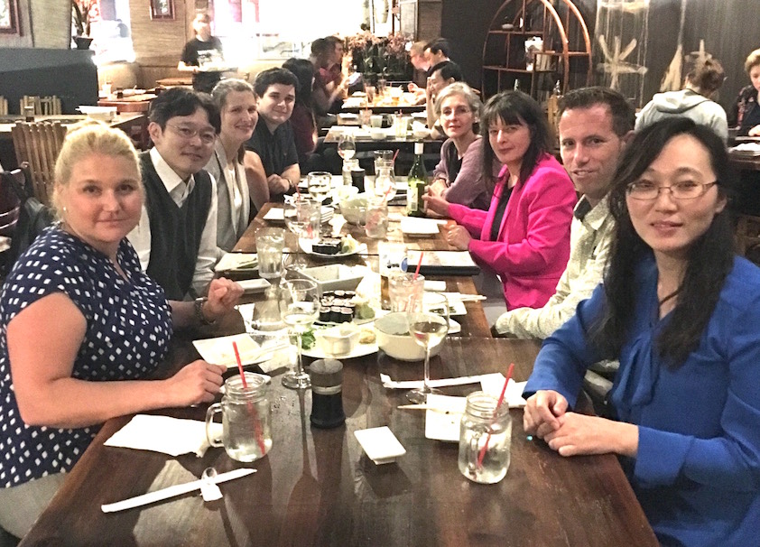
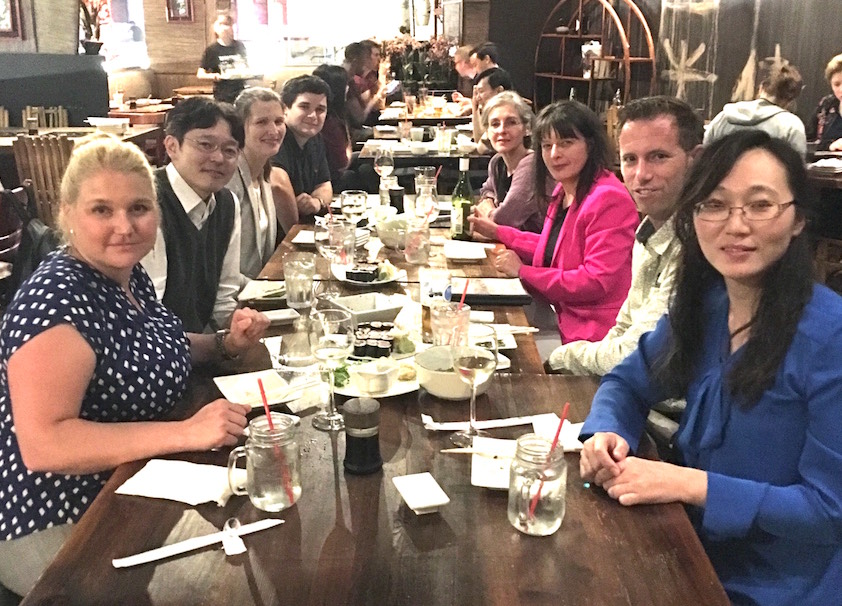
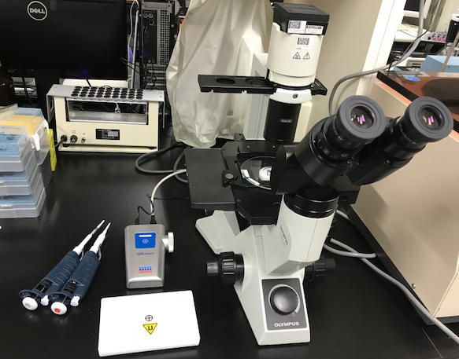
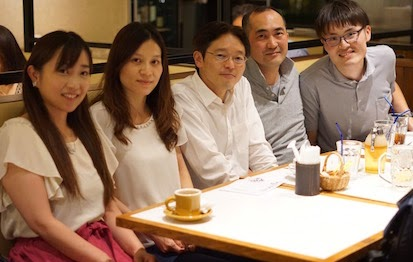

AACR Advances in Breast Cancer Conferenceに参加しました
AACR Advances in Breast Cancer Conference に参加しました。やはり免疫関連の話題が多かったですが、ゲノム、シグナル、DNA修復、代謝、合成致死、薬剤耐性化機構、イメージング、幹細胞など、多岐にわたる分野の最新の情報を効率よく収集することができました。留学時代のボスともディスカッションすることができ、有意義な時間となりました。
丸山研究室の近況をお知らせします。
AACR Advances in Breast Cancer Conference に参加しました。やはり免疫関連の話題が多かったですが、ゲノム、シグナル、DNA修復、代謝、合成致死、薬剤耐性化機構、イメージング、幹細胞など、多岐にわたる分野の最新の情報を効率よく収集することができました。留学時代のボスともディスカッションすることができ、有意義な時間となりました。
顕微鏡を見ながらシングルセルを単離できる装置、数週間悩んだ末に購入を決断しました。問題は単離したあと。。。いろいろと試してみたいことがあります。
新しいメンバーの歓迎会を開催しました。メンバー全員が顔を合わせる初めての機会となり、夢や妄想を熱く語り合いました！これからよろしくお願いします！
8月1日から、当研究室の研究助手として楊麗英さんが仲間に加わってくれました。楊さんは日本で博士号を取得し経験も豊富であり、これから分子生物学的実験、細胞実験、動物実験など様々なことに従事してもらいます。 また同じく8月1日から研修生として佐藤明奈先生が当研究室に参加してくれます。臨床業務と両立しながら、研究・実験の基礎を学びます。
6月1日から、当研究室の研究生として田辺真彦先生(杏雲堂病院乳腺外科科長)、研修生として粂川昂平先生(牛久愛和総合病院初期研修医)が仲間に加わってくれます。 田辺先生はこれまで行ってきた乳がんにおけるヒストンバリアントの研究を継続します。粂川先生はトリプルネガティブ乳がんに重要な役割を果たしていると思われる転写因子の役割についての研究を行います。粂川先生はバイオインフォマティクスも得意です。
がんのバイオロジーの本質を理解することにより、がん診療に貢献しうる知見を見出すことを目標としています。